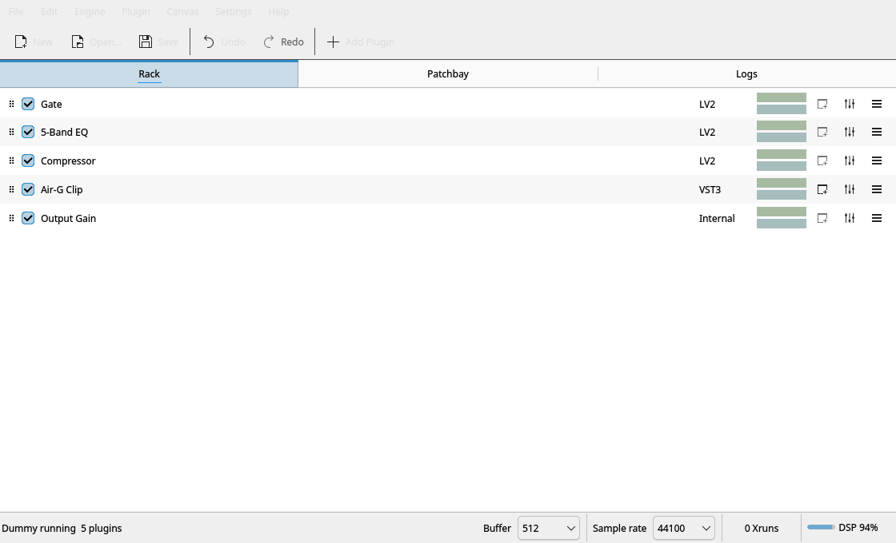
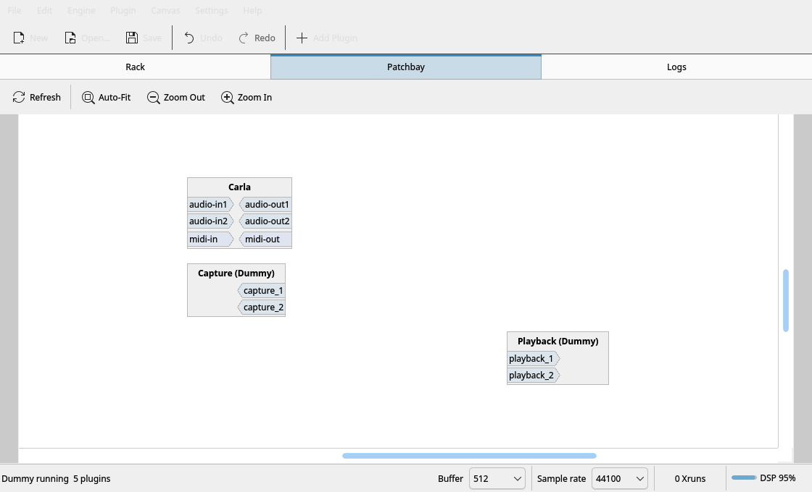

Franca
A focused, slimmer fork of Carla for Linux.
Franca keeps Carla's audio engine and plugin bridges (LV2, VST3, VST2, CLAP, LADSPA, DSSI, JSFX, SF2/SF3, SFZ, and optional Wine bridges) and pairs them with a native Rust + Qt 6 / KDE Kirigami interface built for everyday PipeWire/JACK rack hosting.
- Frontend
- Rust + Qt 6 / KDE Kirigami (
franca-ui) - Audio driver
- JACK / PipeWire (plus ALSA, PulseAudio, Dummy)
- Compatibility
- Reads and writes
.carxpprojects and.carxspresets - License
- GPL-2.0-or-later
Why this fork exists
Carla is a great project, but using it day to day exposed a few issues that pushed me to build a smaller, more tailored fork:
- Crashes and general slowness. Upstream Carla crashed often enough and felt sluggish in everyday use. Moving the UI to Rust + Qt 6 and fixing engine/shutdown edge cases keeps it responsive and predictable.
- UI didn't fit the desktop environment. Carla's custom look felt out of place on KDE Plasma. Franca uses native Qt 6 / Kirigami styling so it blends in with the rest of the desktop.
- Plugin crashes and segfaults. Certain plugins caused Carla or its bridges to segfault (including exit crashes from third-party static destructors). Franca includes bridge hardening, rotating session logs, and safe project recovery when plugins are missing.
- A much simpler use case. Carla tries to cover a huge surface area. Franca is not a substitute for Carla—it is a focused, slimmer version meant for hosting a rack of plugins and wiring them into PipeWire/JACK without extra clutter.
All credit for the audio engine and plugin hosting foundation goes to falkTX and upstream Carla.
The Interface
Franca uses your desktop's native Qt 6 / Breeze theme and splits the workspace into three tabs: Rack, Patchbay, and Logs.


The third tab, Logs, records bounded rotating session output so plugin warnings and bridge errors stay easy to inspect without getting in the way.
Usage
- Scan your plugins. Set your plugin folders in Settings, then click Add Plugin → Refresh to scan LV2, VST3, VST2, CLAP, LADSPA, DSSI, SF2/SFZ, and Wine plugins.
- Build a rack. Add effects, drag rows to reorder them, and toggle plugins on or off (bypassed plugins pass audio cleanly through the continuous rack).
- Wire the patchbay. Open the Patchbay tab to connect your rack to your PipeWire/JACK graph (for example, hardware mic → rack → virtual microphone).
-
Reuse existing Carla projects. Open
.carxpprojects and.carxspresets directly. Franca shares Carla's settings namespace and default JACK client name so existing routes carry over.
Download & Build
Franca targets Arch Linux with a C/C++ toolchain, Make, Rust/Cargo, Qt 6, and KDE Kirigami.
Run make features to check which audio drivers and plugin formats are detected.
Build backend and native Rust/Qt 6 UI
git clone https://github.com/D35P4C1T0/Franca.git
cd Franca
make -j"$(nproc)"
make rust-uiOptional: 64-bit Wine plugin bridge
make -j"$(nproc)" win64 CC=x86_64-w64-mingw32-gcc CXX=x86_64-w64-mingw32-g++ AR=x86_64-w64-mingw32-ar
make wine64Install and run
make install PREFIX="$HOME/.local"
pw-jack "$HOME/.local/bin/franca" project.carxpSee INSTALL.md for full dependency and Wine setup details. Source archive: main.zip.